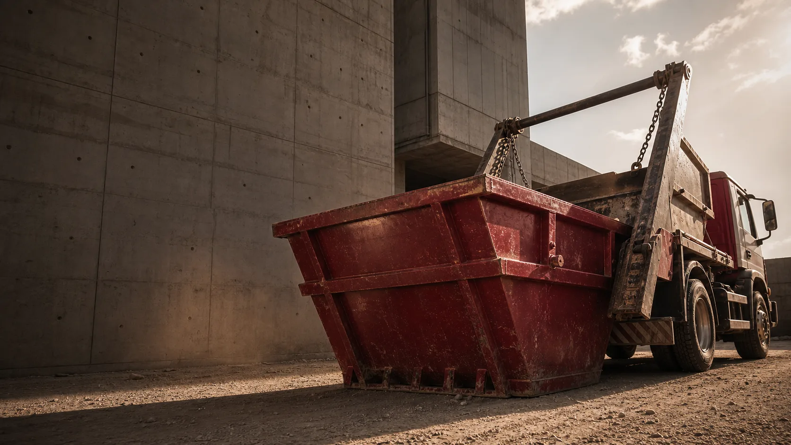
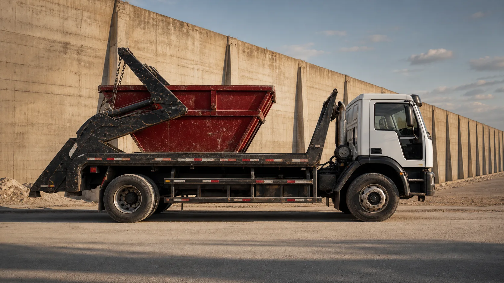
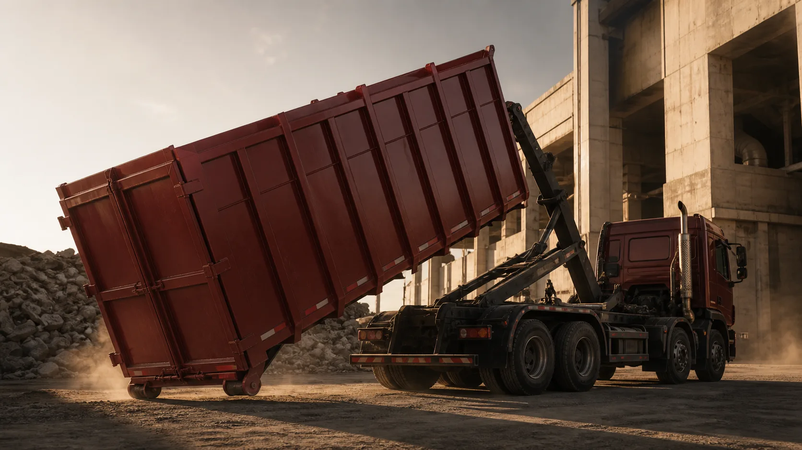
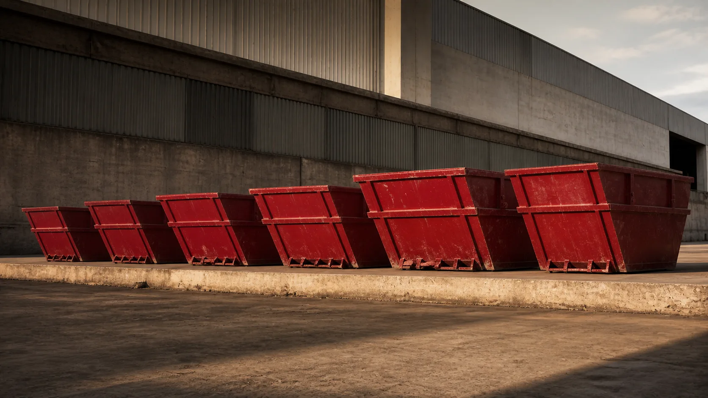
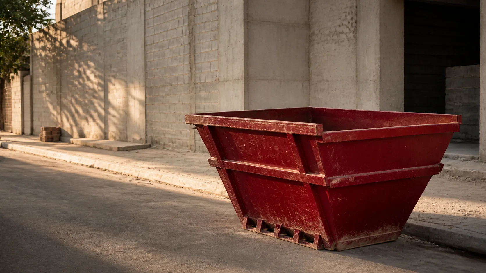
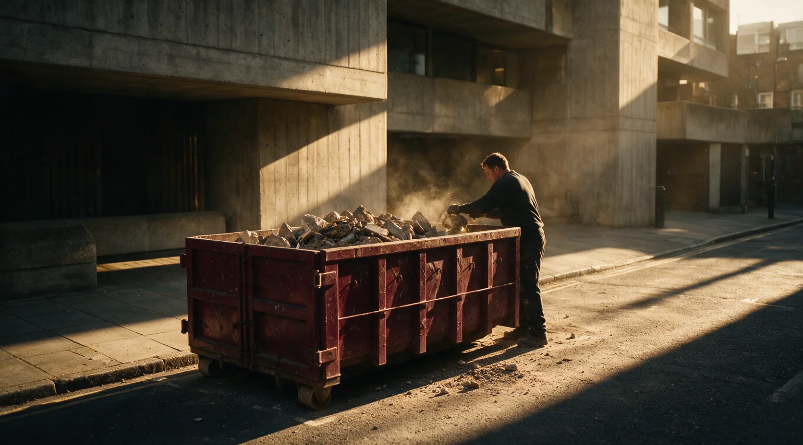

Aluguel de caçambas para obras, reformas e entulho parado
Sua obra continua.
O entulho sai do caminho.
Sem ligação, sem espera, sem "te retorno amanhã": escolha o volume, informe sua cidade e monte o pedido em poucos minutos.
Escolher minha caçambaAtendimento em todo o Brasil, por parceiros e filiais regionais — encontramos a opção mais próxima da sua obra.


Você pede.
A operação encaixa.
Fornecedor que não aparece, prazo que muda sem aviso, ninguém que responda: a Mestre organiza a escolha e prepara tudo para o atendimento confirmar disponibilidade, entrega e retirada — sem enrolação.
Atendimento condicionado à disponibilidade local.
Fazer meu pedidoDo pedido à retirada,
cada etapa no lugar.
- PedirCidade, volume e tipo de resíduo — sem burocracia, sem formulário de 20 campos.
- ConfirmarO atendimento valida prazo, regras e disponibilidade antes de qualquer cobrança.
- CoordenarEntrega e retirada seguem exatamente o que foi combinado com você.

Antes de escolher
Cada volume, na medida certa.
Cinco tamanhos reais, lado a lado — sem depender de imaginação.
Já decidi — pedir agora
Escolha pelo volume.
Veja o pedido tomar forma.
Arraste para girar 360°. Role para mudar de ângulo. Toque em um volume para selecionar.
Preços informados pelo cliente. Disponibilidade e condições são confirmadas no atendimento.
Obra, reforma ou limpeza:
comece pelo que precisa sair.
Entulho amontoado atrasa a obra, incomoda o vizinho e atrapalha quem trabalha. Informe o tipo de resíduo no pedido — a equipe confirma o volume indicado e as regras aplicáveis na sua cidade.
Já decidi — pedir agora

Por que confiar na Mestre
Chega de orçamento que nunca chega e atendimento que some depois do pedido. Sem letra miúda: o preço é o que está na tela, e nada é cobrado antes de confirmar.
Preço real, sem surpresa
Os 5 volumes e valores estão nesta página, não escondidos atrás de um formulário.
Pedido sem compromisso
Montar o pedido e enviar pelo WhatsApp não fecha nada sozinho. Você confirma depois.
Atendimento humano, não robô
Disponibilidade, regras locais e prazos são checados por uma pessoa de verdade, na central — antes de qualquer cobrança.
Depoimentos de clientes
Aluguei uma caçamba para uma reforma em Salvador e fui muito bem atendida. A equipe foi ágil desde o orçamento até a retirada, sempre com muita educação e organização.
Juliana M. — Salvador, BA
O serviço em Belo Horizonte superou minhas expectativas. A caçamba foi entregue rapidamente e o atendimento foi claro e prestativo. Recomendo para quem busca praticidade durante a obra.
Rodrigo P. — Belo Horizonte, MG
Precisávamos retirar bastante entulho em Porto Alegre e a empresa resolveu tudo com rapidez. A entrega ocorreu no horário combinado e o suporte durante o aluguel fez toda a diferença.
Patrícia S. — Porto Alegre, RS
Perguntas frequentes
Como funciona a entrega e a retirada?
Você informa cidade, volume e tipo de resíduo no pedido. O atendimento confirma disponibilidade e combina o dia da entrega e da retirada com você.
Os preços da página já incluem tudo?
Os valores mostrados são os preços por volume. Taxas locais, tempo de permanência e regras específicas da sua cidade são confirmados pelo atendimento antes da contratação.
Que tipo de resíduo posso colocar na caçamba?
Informe o tipo no pedido (entulho de obra, concreto, madeira, poda...). A equipe confirma o que é aceito de acordo com a legislação local.
Por quanto tempo posso ficar com a caçamba?
O período é combinado no pedido. Locações acima de 7 dias têm condição especial de valor, informada pelo atendimento ao confirmar.
Atende obra pequena ou só volume grande?
Os volumes vão de 3 a 10 m³, para reformas pequenas ou obras maiores. Necessidades acima disso entram como consulta específica.
Como eu faço o pedido?
Escolha o volume no comparador, preencha cidade e tipo de resíduo, e envie para a central pelo WhatsApp ou copie o resumo. Atendimento humano, especializado, do outro lado — nada é cobrado até confirmar.
Leva menos de um minuto
Chega de esperar retorno. Preencha os dados e fale direto com a central — atendimento humano e especializado, sem condição presumida: disponibilidade, regras e prazos são confirmados antes de qualquer contratação.
Resumo do pedido
- Volume
- 5 m³ — R$ 310
- Cidade
- A definir
- Resíduo
- A definir
- Duração
- Até 7 dias
Locações acima de 7 dias têm condição especial de valor. O atendimento informa ao confirmar.